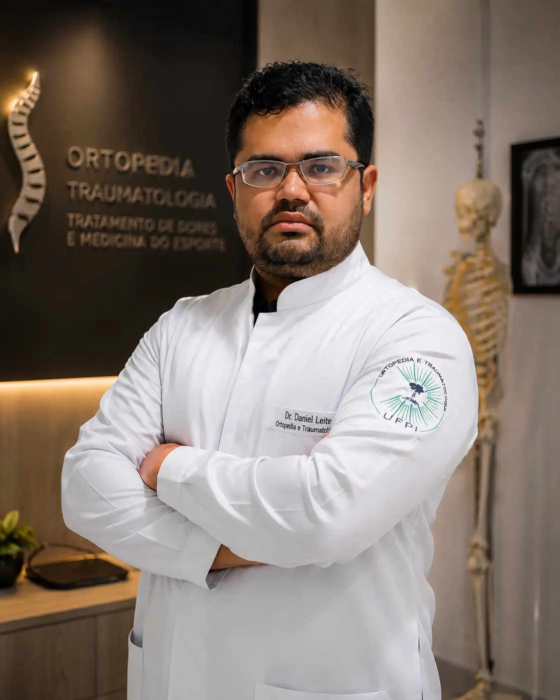

Piauí
(89) 2101-1159Cuidado especializado em movimento e dor
Dr. Daniel Leite de Sousa
Ortopedista e Medicina da Dor
Atendimento ortopédico individualizado, com diagnóstico preciso e opções modernas de tratamento para dores e lesões do aparelho locomotor.

Cuidado completo
Áreas de atuação
01Ortopedia e traumatologia
02Tratamento das dores crônicas
03Medicina da dor
04Intervenções guiadas por imagem para dor
05Alongamento, reconstrução óssea e correção de deformidades com Ilizarov
Ortopedia e tratamento da dor
Atendimento ortopédico no Piauí e Maranhão
O Dr. Daniel Leite de Sousa é médico ortopedista e traumatologista, com atendimento em Teresina, São Raimundo Nonato, Caxias e Presidente Dutra.
Realiza avaliação de dores e lesões do aparelho locomotor, tratamento das dores crônicas, intervenções guiadas por imagem, além de alongamento, reconstrução óssea e correção de deformidades com Ilizarov.
Ver locais de atendimento e agendar consultaLocais de atendimento
Consultas mais perto de você
Escolha a cidade de sua preferência e fale com nossa equipe para conferir os próximos horários disponíveis.
Piauí
(89) 98141-2698São Raimundo Nonato
Maranhão
(99) 99223-0310Caxias
Maranhão
(99) 98547-1638Presidente Dutra
Seu cuidado começa aqui